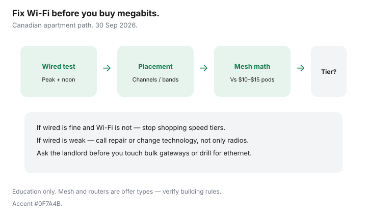

Internet · Canada
Faster Wi-Fi in a Canadian Apartment Without Paying for a Higher Internet Tier
Renters often buy a higher internet tier because Zoom looks soft in the bedroom — when the pipe to the building is fine and the Wi-Fi path is the bottleneck. Canadian apartments add concrete floors, neighbour radios, bulk-building gateways, and landlord coax rules. This guide is a weekend fix path that avoids an unnecessary ISP upgrade. Education only; stamped ~22 Sep 2026.
Disclosure: Mesh Wi-Fi systems, better routers, ethernet cables, and ISP offer types are mentioned as categories. Saving Optimizer may later add partner links. We do not rank products or claim hardware commissions today. Verify building rules before you drill or replace a bulk modem.
Key takeaways
- Run a wired speed test before you buy more megabits.
- Fix placement and channels before mesh; fix mesh before a plan upgrade.
- Compare buy-once mesh to $10–$15 ISP pod rentals over 24–36 months.
- Bulk deals and landlord coax rules can block gear changes — ask first.
- If wired rates are already low, a speed upgrade may help; if only Wi-Fi is low, it will not.
Speed test wired vs Wi-Fi to find the real bottleneck
- Plug a laptop into the gateway with ethernet (USB-C adapters count).
- Test at peak evening and once at noon — save screenshots.
- Repeat on Wi-Fi in the worst room.
- If wired meets the plan and Wi-Fi does not, stop shopping tiers.
CRTC’s national 50/10 floor is a policy benchmark, not your apartment’s Wi-Fi guarantee. Cost per usable megabit after the promo matters more than the download number on the box.
Router placement and channel basics for condos
- Move the gateway out of the media cabinet and off the floor.
- Prefer a central shelf over a window on the neighbour’s access point.
- Use the ISP app or a basic analyzer to avoid the busiest 2.4 GHz channels; try 5 GHz/6 GHz in the same room as work.
- Rename bands so gadgets that can use 5 GHz stop clinging to 2.4 GHz.
Mesh vs ISP extender rentals for apartments
ISP pods at about $10–$15 each add up. A small buy-once mesh (ethernet backhaul if you can hide a cable along baseboards) often wins on 24-month math — see our mesh vs pods guide. In a studio, one well-placed router beats three poorly placed nodes.

Landlord/building constraints (bulk deals, coax)
Some buildings include bulk internet in fees. You may still have rights to seek another provider under CRTC MDU access rules — see apartment and condo rights — but you might not be allowed to swap the bulk modem or drill for ethernet. Ask the property manager before you buy a mesh that needs LAN ports you do not control. Coax splitters behind a panel can also starve the gateway; that is a building issue, not a “need 1 Gbps” issue.
When a speed upgrade still will not help
- Wired test already far below plan — call repair, do not buy mesh alone.
- Single old laptop on 2.4 GHz while the phone flies on 5 GHz — client hardware.
- VPN and cloud backup saturating upload — consider technology (fibre upload), not another 500 Mbps of download.
- Bulk gateway with no bridge mode — you may need landlord permission or a different provider at the unit.
A weekend Wi-Fi fix checklist
| Block | Tasks |
|---|---|
| Saturday morning | Wired vs Wi-Fi tests; screenshot results |
| Saturday afternoon | Reposition gateway; tidy coax; reboot |
| Saturday evening | Retest at peak; adjust channels/bands |
| Sunday | If still weak: price mesh vs pod rental; confirm landlord rules |
| Only then | Call ISP for repair or a tier change if wired is the limit |
Sources & date stamps
- CRTC broadband objective context (50/10) and MDU access decisions referenced on our apartment-rights guide (~22 Sep 2026).
- Saving Optimizer: mesh vs ISP pods; how much speed you need; buy vs rent modem; apartment internet rights.
Frequently asked questions
Will upgrading from 100 to 500 Mbps fix my bedroom Wi-Fi?
Not if ethernet at the gateway already shows ~100 Mbps and Wi-Fi in the bedroom shows 20. Fix radios and placement first.
Are ISP rental pods bad?
They are convenient and expensive over time. Add up 24 months of $10–$15 each, then compare a buy-once mesh you can take to the next apartment.
Can my landlord ban a mesh system?
They can restrict drilling and tampering with bulk equipment. Plug-in nodes that do not alter building wiring are usually a conversation, not a loophole — ask.
Should I enable both ISP Wi-Fi and my mesh SSID?
Prefer one DHCP brain: bridge or disable the ISP radio when the UI allows, so devices do not roam between overlapping networks.
When is a fibre upgrade the real answer?
When wired upload or download at the gateway is the limit for WFH — not when only the back bedroom is weak on Wi-Fi.